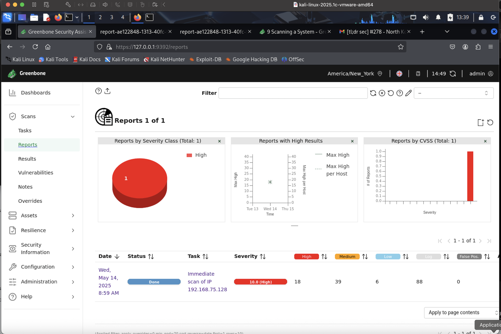
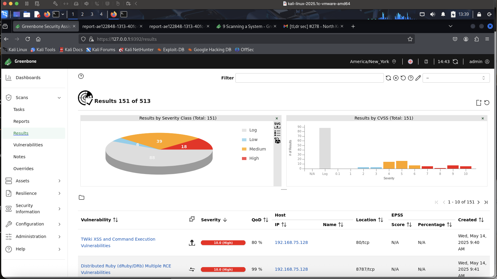

Vulnerability Scan
Objective of the Project
Implement a proactive cybersecurity defense strategy using OpenVAS, a free, open-source vulnerability scanner, to
monitor and detect security weaknesses across a network. The goal is to:
- Identify exposed services and misconfigurations.
- Detect known vulnerabilities (CVEs).
- Generate detailed reports on security issues.
- Prioritize remediation to reduce attack surface.
.

Tools to Use:
- Kali Linux
- OpenVAS (Greenbone)
- Vulnerable Machine (Metasploitable2)
Configure Scan:
- Install OpenVAS on Kali Linux.
- Configure OpenVAS to scan the Metasploitable2 VM.(Ensure this machine is in same network with Kali linux)
- Create a new scan task (Using task wizard)
- Set scan type to "Full and Fast" for comprehensive coverage.
Scan Result:



- OpenVAS will identify various vulnerabilities, including:
- Unpatched software versions.
- Open ports: (FTP: 21), (SSH: 22), (Telnet: 23), etc .
- CVEs and risk ratings (Low, Medium, High).